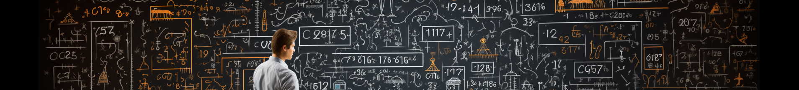

When you want to buy a mobile phone, what criteria do you use to make your choice? Do you simply buy one you like, or do you go for the cheapest option? Maybe a combination of both? Our decisions are often influenced by multiple factors, considerations, short-term and long-term impacts, and the weights of those impacts. For relatively simple decisions, like buying a mobile phone with 5 to 6 considerations, we can manage quite well. However, when it comes to decisions like determining the location of an airport, there could be dozens or even more considerations with intricate relationships. Often, there are conflicting criteria between different considerations. In the face of such complex choices, we often need scientific methods to assist us. One such approach is Multi-criteria Decision Making (MCDM), which is introduced here.
Multi-criteria Decision Making (MCDM) refers to the process of making optimal decisions when faced with multiple competing or conflicting criteria. In such situations, different criteria may have varying impacts on the decision outcome, and these criteria may have different priorities. MCDM aims to find an effective way to comprehensively consider these criteria and identify the best possible solution.
MCDM can be applied in various domains and problems, such as business management, investment decisions, resource allocation, urban planning, and environmental protection. In these scenarios, decision-makers need to consider multiple relevant factors and objectives and make trade-offs among them.
There are several methods to address Multi-criteria Decision Making problems, and a few of them are introduced here:
Multi-criteria Decision Making is a complex problem, and different problems may require different methods and techniques to solve. Choosing the appropriate MCDM method depends on the specific characteristics and requirements of the problem at hand.
The Analytic Hierarchy Process (AHP) is a systematic method used for dealing with multi-criteria decision-making problems. It was proposed by American mathematician and operations researcher Thomas L. Saaty in 1970. The goal of AHP is to assist decision-makers in structuring, quantifying, and comparing different criteria and alternative solutions in complex decision situations, ultimately finding the optimal decision solution.
The fundamental idea of AHP is to decompose the decision problem into multiple levels (Hierarchy), where each level represents a set of factors or criteria, and there are parent-child relationships between levels. The top-level is the goal level, representing the overall objective or problem. The next level is the criteria level, containing various criteria or factors needed to achieve the goal. The next level is the alternatives level, containing different alternative solutions. Within each level, there are pairwise comparisons among the elements.
The advantages of AHP lie in its ability to structure complex decision problems, transform subjective evaluations into quantitative data, making the decision process more transparent and objective. It helps decision-makers gain a better understanding of the hierarchical structure of the decision problem and the relative importance among factors, leading to more informed decisions. Therefore, AHP finds widespread applications in various fields, including business management, engineering planning, environmental assessment, and others.
# Import the gdata library
library(gdata);
# Create a 3x3 diagonal matrix M
M <- diag(3);
# Assign values to M
M[2,3]<-1/3;
M[1,3]<-3;
M[1,2]<-5;
# Calculate the lower triangle of M from the upper triangle
lowerTriangle(M) <- 1/upperTriangle(M, byrow=TRUE);
# Calculate the sum of each column of M and store it in the vector V
V<-c(0,0,0);
V<-colSums(M);
# Divide each element of vector V by the corresponding column sum to get the normalized pairwise comparison matrix MP
MP<-matrix(0,3,3);
MP[,1]<-M[,1]/V[1];
MP[,2]<-M[,2]/V[2];
MP[,3]<-M[,3]/V[3];
# Calculate the row averages of MP to get the relative priorities vector CWV
CWV<-c(0,0,0);
CWV<-rowMeans(MP);
# Calculate the CWV2 vector using the geometric mean method
CWV2<-c(0,0,0);
CWV2[1]<-(MP[1,1]*MP[1,2]*MP[1,3])^(1/3);
CWV2[2]<-(MP[2,1]*MP[2,2]*MP[2,3])^(1/3);
CWV2[3]<-(MP[3,1]*MP[3,2]*MP[3,3])^(1/3);
# Calculate the vector V, which is the "weighted sum" by summing each row's values. '%*%' represents matrix multiplication.
V <- M %*% CWV;
# Divide the elements in the resulting "weighted sum" vector by the corresponding priority values.
X<- V/CWV;
# Calculate the average of the resulting values, denoted as Lambda_Max.
Lambda_Max <- mean(X);
# Calculate the consistency index (CI).
CI <- (Lambda_Max-3)/(3-1);
# Calculate the consistency ratio (CR).
CR <- CI/0.58;
# Determine whether the consistency test is accepted or not based on CR.
if (CR > 0.1)
{
print("Failed consistency test");
}
else
{
print("Passed consistency test");
}
ANP is a multi-criteria decision-making method used to address complex decision problems, particularly those with interdependencies among multiple criteria and sub-criteria.
ANP is an extension of AHP (Analytic Hierarchy Process) and is used to tackle multi-criteria decision-making problems with cyclic dependencies and interactions.Here, ANP is applied to evaluate Airport Accessibility. The evaluation involves four aspects: Market Attractiveness Rating (MAR), Airport Accessibility (ACC), Cost of Stay (COS), and Cultural Attractions Points (CAP).
## Airport Accessibility
library(gdata)
#MAR
M <- diag(7);
M[1,2]<-1/7;
M[1,3]<-1/3;
M[1,4]<-1/3;
M[1,5]<-1;
M[1,6]<-1/7;
M[1,7]<-1/2;
M[2,3]<-5;
M[2,4]<-5;
M[2,5]<-5;
M[2,6]<-3;
M[2,7]<-5;
M[3,4]<-2;
M[3,5]<-2;
M[3,6]<-1/5;
M[3,7]<-3;
M[4,5]<-3;
M[4,6]<-1/5;
M[4,7]<-1;
M[5,6]<-1/5;
M[5,7]<-2;
M[6,7]<-5;
lowerTriangle(M) <- 1/upperTriangle(M, byrow=TRUE);
# Sum the columns
V<-c(0,0,0,0,0);
V<-colSums(M);
# Divide the sum of the columns back to M
MP<-matrix(0,7,7);
MP[,1]<-M[,1]/V[1];
MP[,2]<-M[,2]/V[2];
MP[,3]<-M[,3]/V[3];
MP[,4]<-M[,4]/V[4];
MP[,5]<-M[,5]/V[5];
MP[,6]<-M[,6]/V[6];
MP[,7]<-M[,7]/V[7];
# Compute the average of rows, to obtain the CWV
CWV<-c(0,0,0,0,0,0,0);
CWV<-rowMeans(MP);
library(gdata)
#ACC
M <- diag(7);
M[1, 2]<-3
M[1, 3]<-0.33
M[1, 4]<-0.2
M[1, 5]<-0.2
M[1, 6]<-3
M[1, 7]<-2
M[2, 3]<-0.2
M[2, 4]<-0.2
M[2, 5]<-0.2
M[2, 6]<-0.5
M[2, 7]<-0.33
M[3, 4]<-2
M[3, 5]<-2
M[3, 6]<-5
M[3, 7]<-3
M[4, 5]<-0.5
M[4, 6]<-5
M[4, 7]<-3
M[5, 6]<-5
M[5, 7]<-3
M[6, 7]<-0.33
lowerTriangle(M) <- 1/upperTriangle(M, byrow=TRUE);
#ACC
# Sum the columns
V<-c(0,0,0,0,0,0,0);
V<-colSums(M);
# Divide the sum of the columns back to M
MP<-matrix(0,7,7);
MP[,1]<-M[,1]/V[1];
MP[,2]<-M[,2]/V[2];
MP[,3]<-M[,3]/V[3];
MP[,4]<-M[,4]/V[4];
MP[,5]<-M[,5]/V[5];
MP[,6]<-M[,6]/V[6];
MP[,7]<-M[,7]/V[7];
# Compute the average of rows, to obtain the CWV
CWV1<-c(0,0,0,0,0,0,0);
CWV1<-rowMeans(MP);
#COS
COS <- diag(7)
COS[1,2]=1/6
COS[1,3]=1/7
COS[1,4]=5
COS[1,5]=1/7
COS[1,6]=1/9
COS[1,7]=7
COS[2,3]=1/3
COS[2,4]=7
COS[2,5]=3
COS[2,6]=1/3
COS[2,7]=7
COS[3,4]=7
COS[3,5]=5
COS[3,6]=1/2
COS[3,7]=8
COS[4,5]=1/8
COS[4,6]=1/6
COS[4,7]=3
COS[5,6]=1/5
COS[5,7]=9
COS[6,7]=7
lowerTriangle(COS) <- 1/upperTriangle(COS,byrow = T)
#cwv
CosV <- c(0,0,0)
CosV <- colSums(COS)
CosMP <- matrix(0,7,7)
for(i in c(0:7))
{
CosMP[,i] <- COS[,i]/CosV[i]
}
CosCWV2 <- c(0,0,0)
CosCWV2<- rowMeans(CosMP)
#CAP
M <- diag(7);
M[1,2] = 1/2
M[1,3] = 2
M[1,4] = 2
M[1,5] = 1/3
M[1,6] = 5
M[1,7] = 1/5
M[2,3] = 3
M[2,4] = 2
M[2,5] = 1/3
M[2,6] = 5
M[2,7] = 4
M[3,4] = 2
M[3,5] = 1/5
M[3,6] = 5
M[3,7] = 1/7
M[4,5] = 1/3
M[4,6] = 5
M[4,7] = 5
M[5,6] = 5
M[5,7] = 1/3
M[6,7] = 1/9
lowerTriangle(M) <- 1/upperTriangle(M, byrow=TRUE);
# Sum the columns
V<-colSums(M);
# Divide the sum of the columns back to M
MP<-matrix(0,7,7);
MP[,1]<-M[,1]/V[1];
MP[,2]<-M[,2]/V[2];
MP[,3]<-M[,3]/V[3];
MP[,4]<-M[,4]/V[4];
MP[,5]<-M[,5]/V[5];
MP[,6]<-M[,6]/V[6];
MP[,7]<-M[,7]/V[7];
# Compute the average of rows, to obtain the CWV
CWV3<-c(0, 0, 0, 0, 0, 0, 0);
CWV3<-rowMeans(MP);
S<- diag(4);
S[1,2] = 4
S[1,3] = 1/2
S[1,4] = 2
S[2,1] = 1/4
S[2,3] = 1/4
S[2,4] = 1/4
S[3,4] = 4
lowerTriangle(S) <- 1/upperTriangle(S, byrow=TRUE);
# Sum the columns
V<-c(0,0,0,0);
V<-colSums(S);
# Divide the sum of the columns back to M
SP<-matrix(0,4,4);
SP[,1]<-S[,1]/V[1];
SP[,2]<-S[,2]/V[2];
SP[,3]<-S[,3]/V[3];
SP[,4]<-S[,4]/V[4];
# Compute the average of rows, to obtain the CWV
CWV4<-c(0, 0, 0, 0);
CWV4<-rowMeans(SP);
X=rbind(CWV,CWV1,CosCWV2,CWV3)
colnames(X)=c('A1','A2','A3','A4','A5','A6','A7')
SI = t(X)%*%CWV4
rank(-SI)
# Create empty data frame
y <- data.frame(matrix(data=0, ncol = 3, nrow = 4));
colnames(y) <- c("Style","Reliability","FuelEco");
rownames(y) <- c("Civic","Saturn","Ford","Mazda");
str(y);
# Assign atrribute values to each alternative row
y["Civic",] <- c(7,9,9);
y["Saturn",] <- c(8,7,8);
y["Ford",] <- c(9,6,8);
y["Mazda",] <- c(6,7,8);
# Append a column to store the SAW-ed scores for each alternative
SAW_score_vector <- c(0,0,0,0);
y<-cbind(y,SAW_score_vector);
SAW_weight_vector <- c(0.3,0.4,0.3);
SAW_weight_vector * y["Civic",];
y["Civic","SAW_score_vector"] <- sum (SAW_weight_vector * y["Civic",]);
SAW_weight_vector * y["Saturn",];
y["Saturn","SAW_score_vector"] <- sum (SAW_weight_vector * y["Saturn",]);
SAW_weight_vector * y["Ford",];
y["Ford","SAW_score_vector"] <- sum (SAW_weight_vector * y["Ford",]);
SAW_weight_vector * y["Mazda",];
y["Mazda","SAW_score_vector"] <- sum (SAW_weight_vector * y["Mazda",]);
SAW_rank_vector <- order(-y$SAW_score_vector);
y<-cbind(y,SAW_rank_vector);
# Construct standardized y
y_standardised <- y;
y_standardised[,"Style"]<-y[,"Style"]/max(y[,"Style"]);
y_standardised[,"Reliability"]<-y[,"Reliability"]/max(y[,"Reliability"]);
y_standardised[,"FuelEco"]<-y[,"FuelEco"]/max(y[,"FuelEco"]);
y<-y_standardised;
# Construct standardized y
y_standardised <- y;
y_standardised[,"Style"]<-y[,"Style"]/sqrt(sum(y[,"Style"]^2));
y_standardised[,"Reliability"]<-y[,"Reliability"]/sqrt(sum(y[,"Reliability"]^2));
y_standardised[,"FuelEco"]<-y[,"FuelEco"]/sqrt(sum(y[,"FuelEco"]^2));
y<-y_standardised;
DecisionMatrix<-matrix(0,4,4);
DecisionMatrix[1,]<-c( 49, 81, 81, 64);
DecisionMatrix[2,]<-c( 64, 49, 64, 49);
DecisionMatrix[3,]<-c( 81, 36, 64, 81);
DecisionMatrix[4,]<-c( 36, 49, 64, 36);
DecisionMatrix;
#Normalize the decision matrix according to the standard operation defined by TOPSIS
NumRows<-nrow(DecisionMatrix);
NumCols<-ncol(DecisionMatrix);
D_normalize<-matrix(0,NumRows,NumCols);
for ( j in c(1:NumCols) )
{ D_normalize[,j]<-DecisionMatrix[,j]/sqrt(sum(DecisionMatrix[1:NumRows,j]^2))
};
#Setup the criterion weight vector CWV and compute the weighted (normalized) decision matrix WNDMatrix
CWV<-c(.1,.4,.3,.2);
WNDMatrix<-matrix(0,NumRows,NumCols);
for ( j in c(1:NumCols))
{ WNDMatrix[,j]<-CWV[j]*D_normalize[,j];
};
# Determine the ideal A_plus and anti-ideal solution A_minus
A_plus<-c(0,0,0,0);
for ( j in c(1:NumCols))
{ A_plus[j]<-max(WNDMatrix[1:NumRows,j]);
};
A_plus;
# Give a special process because 4 is TLTB
A_plus[4]<-min(WNDMatrix[1:NumRows,4]);
A_minus<-c(0,0,0,0);
for ( j in c(1:NumCols))
{ A_minus[j]<-min(WNDMatrix[1:NumRows,j]);
};
# Give a special process because 4 is TLTB
A_minus[4]<-max(WNDMatrix[1:NumRows,4]);
# Calculate the seperation measure for each alternative
# Distances toward ideal solution A_plus
S_to_ideal<-c(1:NumRows);
for( i in c(1:NumRows) )
{ S_to_ideal[i]<-sqrt( sum(
(WNDMatrix[i,]-A_plus[])^2
)
);
};
# Distances toward anti-ideal solution A_minus
S_to_anti_ideal<-c(1:NumRows);
for( i in c(1:NumRows) )
{ S_to_anti_ideal[i]<-sqrt( sum(
(WNDMatrix[i,]-A_minus[])^2
)
);
};
# Calculate the relative closeness (of each alternative) to the ideal solution, which is the Tie-Jin Xi-Shu
RC<-c(1:NumRows);
for( i in c(1:NumRows) )
{ RC[i]<-S_to_anti_ideal[i]/(S_to_ideal[i]+S_to_anti_ideal[i]);
}; # Equivalant to: RC<-S_to_anti_ideal/(S_to_ideal+S_to_anti_ideal)
order(RC, decreasing=TRUE); RC[order(RC, decreasing=TRUE)];
In this MCDM analysis, we explored three prominent methods: SAW, Max Standardization, and Geo-Mean. Additionally, we examined TOPSIS.
The SAW method allowed decision-makers to assign weights to attributes and rank alternatives based on weighted values. Max Standardization ensured a fair comparison of alternatives with different value ranges, while Geo-Mean provided a balanced evaluation.
TOPSIS ranked alternatives based on their similarity to ideal and anti-ideal solutions, aiding decision-makers in understanding strengths and weaknesses.
Each method's effectiveness depends on the decision context, attribute weights, and standardization. MCDM provides valuable tools for complex decision scenarios in various fields.